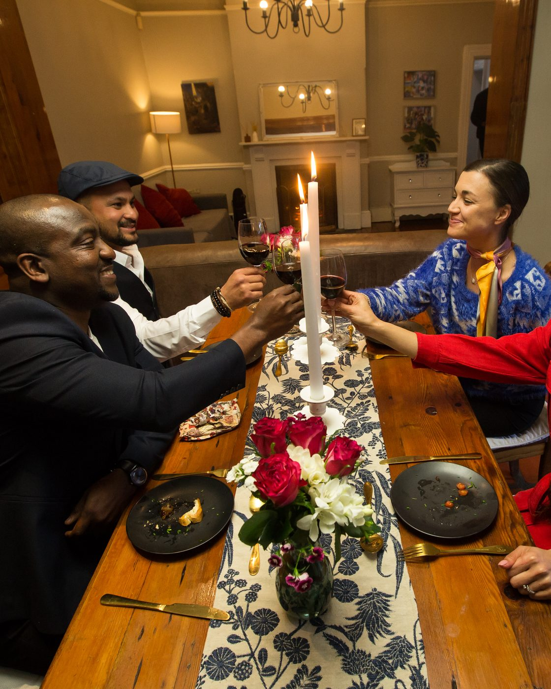

About Deji
Twenty years in customer experience and service leadership. The last ten in South African banking, insurance and home finance.

I've spent 20 years working in customer experience and service leadership, including the last decade across South African banking, insurance and home finance. I've held Head of Customer Experience roles at Absa and the ooba Home Loans group.
At the heart of my work is a simple belief: customer experience is a business discipline built around making things easier for people.
And that starts with simplicity. I believe that if you cannot explain something to a five-year-old, you probably do not understand it well enough yourself. I look for unnecessary complexity in processes, products and communication, then ask what can be removed. Every extra step creates another opportunity for confusion or frustration.
I bring the same thinking to leadership. I work with people rather than above them. I coach, listen to different perspectives and give people space to contribute. I believe people want to do good work, and I've never believed in writing someone off. Everyone has something to offer.
Understanding the person behind the customer
My CX background has also shaped how I think about marketing.
Marketing attracts customers. The experience that follows determines much of what happens next.
Customers bring their previous experiences, expectations and frustrations with them. They don't experience your business in isolation. Understanding that context helps companies make better decisions about what they offer, how they communicate and how they serve people.
Making money easier to understand
I have a personal interest in helping people become better with money.
I enjoy talking to younger colleagues and people in my community about budgeting, debt and financial discipline. Sometimes that means helping someone work out how to get out of debt. Sometimes it means having the slightly uncomfortable conversation about what needs to be sacrificed today to create more freedom tomorrow.
I believe financial information should be practical and easy to understand. People deserve to feel capable of making decisions about their own money.
There's more to life than work.
My wife and our child are at the centre of my life. They keep me grounded, keep me laughing and remind me that there is more to life than work.
I love travelling, I'm a keen runner and I'm a lifelong football supporter. I'm particularly interested in the strategy behind the game: how teams adapt, how decisions shape outcomes and how small changes can affect the whole system.
I also have a competitive streak, and I was fortunate enough to take part in Come Dine With Me South Africa, Season 8, Episode 8. And I won — the baklava helped.




See the method behind the results
Every result on this site follows the same sequence: from what the business believes, to what the data shows, to what sticks.